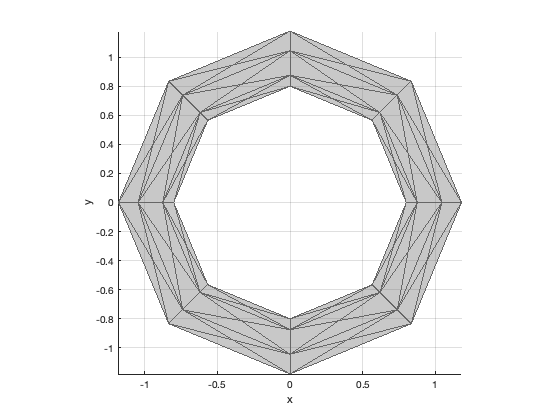
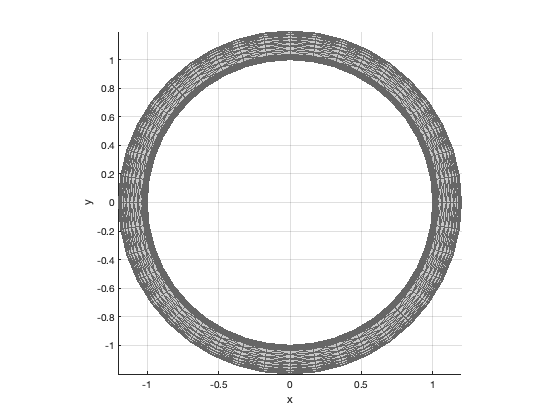

Contents
function [v, f] = Torus( c, r, n, c2, nuX )
TORUS Vertices and faces for a torus.
Generates the data for drawing a torus.
Form:
[v, f] = Torus( c, r, n, c2, nuX )
Inputs
c (1,1) Major radius r (1,1) Minor radius n (1,1) Number of divisions c2 (1,1) Radius for the cut nuX (1,1) Angular range of the minor angle
Outputs
v (n,3) Vertices f (n,3) Faces
if( nargin < 1 ) % Demo c = 1; r = 0.2; Torus( c, r, 8 ) Torus( c, r, [], 0.5, pi/2 + 0.01 ) return end if( nargin < 3 ) n = []; end if( isempty(n) ) n = 40; end if( nargin == 5 ) del = c - c2; gamma = pi - nuX; r2 = sqrt(del^2 + r^2 - 2*del*r*cos(gamma)); alpha = acos(0.5*(del^2 + r2^2 - r^2)/(del*r2)); nuO = linspace(-nuX,nuX,n/2)'; nuI = linspace(alpha,-alpha,n/2)' ; vXZ = [ c + r*cos(nuO), zeros(n/2,1), r*sin(nuO);... c2 + r2*cos(nuI), zeros(n/2,1), r2*sin(nuI)]; else nu = linspace(0,2*pi,n)' - pi; vXZ = [c + r*cos(nu), zeros(n,1), r*sin(nu)]; end phi = linspace(0,2*pi-2*pi/n,n); c = cos(phi); s = sin(phi); v = vXZ; f = []; j0 = 0; % Start of vertices jF = 1; for k = 2:n b = [c(k) s(k) 0;-s(k) c(k) 0;0 0 1]; vN = (b*vXZ')'; v = [v;vN]; for j = 1:n-1 f(jF,:) = j0 + [j j+1 j+1+n]; f(jF+1,:) = j0 + [j j+1+n j+n]; jF = jF + 2; end j0 = j0 + n; end for j = 1:n-1 f(jF,:) = [j+j0 j+1+j0 j+1]; f(jF+1,:) = [j+j0 j+1 j]; jF = jF + 2; end if( nargout == 0 ) NewFigure('Torus'); c = [0.4 0.4 0.4]; shading flat lighting gouraud patch('vertices',v,'faces',f,'facecolor',c,'edgecolor',c,'ambient',1,'facealpha',0.2); axis image xlabel('x') ylabel('y') zlabel('z') view([0 0 1]) grid on rotate3d on clear v end 
Copyright
Copyright (c) 2019, 2022 Princeton Satellite Systems, Inc. All rights reserved.